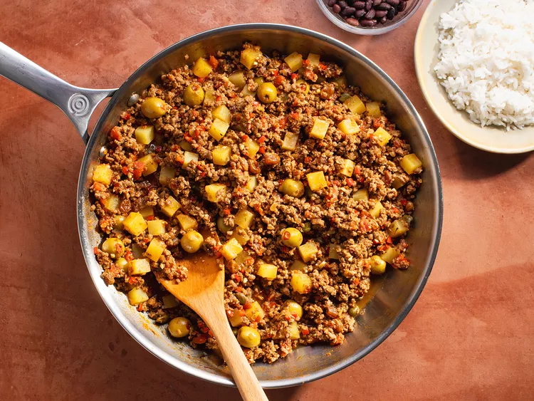

Cuban Picadillo

Picadillo is a Cuban-style hash made with ground pork, ground beef, or a combination of both. While simple to make, this classic Cuban dish is extremely flavorful. It begins with a sofrito of finely chopped onion, red bell pepper, and garlic. Sofrito is the base of many Latin American dishes and it is truly the backbone, so avoid taking shortcuts and cook the vegetables slowly, allowing them to sweat rather than crisp and color. Dried cumin, dried oregano, bay leaves, tomato paste, and white wine are additional ingredients that layer the picadillo.
What makes picadillo really sing is the addition of briny, pimento-stuffed green olives, capers, and raisins. I've had versions with and without potatoes and both are great, so if you're reluctant to double-starch (picadillo is served with white rice) feel free to leave them out.
Picadillo blends various textures and flavors, like concentrated saltiness and plump sweetness, which meld together seamlessly in a dish that's symbolic of good Cuban home cooking.
Ingredients
- 2 tablespoons olive oil
- 1 medium yellow or white onion, finely chopped (about 1 cup)
- 1 small red bell pepper, cored and seeded, finely chopped (about 3/4 cup)
- 1 tablespoon tomato paste
- 4 medium cloves garlic, finely chopped (about 4 teaspoons)
- 2 teaspoons ground cumin
- 2 teaspoons dried oregano
- Kosher salt and freshly ground black pepper
- 2 bay leaves
- 1/2 cup dry white wine
- 1 1/2 pounds ground beef
- 1 cup diced canned tomatoes
- 2 tablespoons Worcestershire sauce
- 1/3 cup raisins
- 1/2 cup pimento stuffed olives plus 2 tablespoons brine
- 2 tablespoons capers
- 1 large waxy potato (such as Yukon Gold or red, about 8 ounces), peeled and cut into 1/4-inch cubes
Steps
- Heat oil in large skillet over medium-high heat until shimmering. Add onion and bell pepper and cook, stirring occasionally, until softened, 5 to 7 minutes. Add tomato paste, garlic, cumin, oregano, 1 1/2 teaspoons salt, 1 teaspoon pepper, and bay leaves and cook until fragrant and tomato paste darkens in color, about 2 minutes. Add wine and cook until reduced to 1/4 cup, about 5 minutes.
- Add meat and cook, stirring and breaking up chunks, until no longer pink, 5 to 7 minutes. Stir in tomatoes, Worcestershire sauce, raisins, olives, capers, brine, and potatoes. Cover, reduce heat to medium-low, and cook until potatoes are tender, about 12 minutes.
- Remove cover and season to taste with salt and pepper. Remove and discard bay leaves. Serve with white rice and black beans.